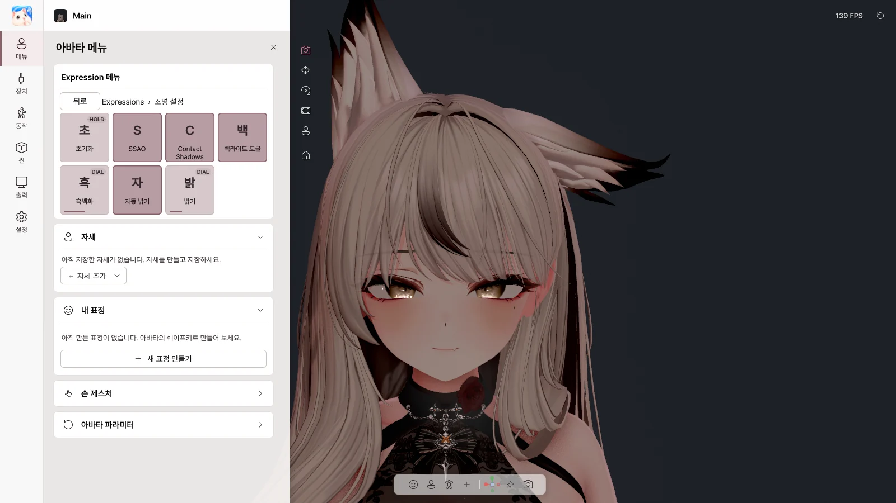
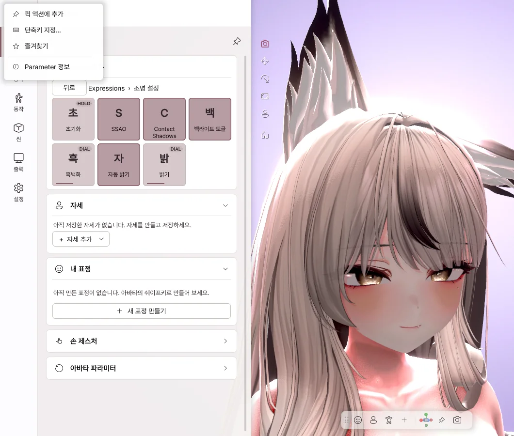
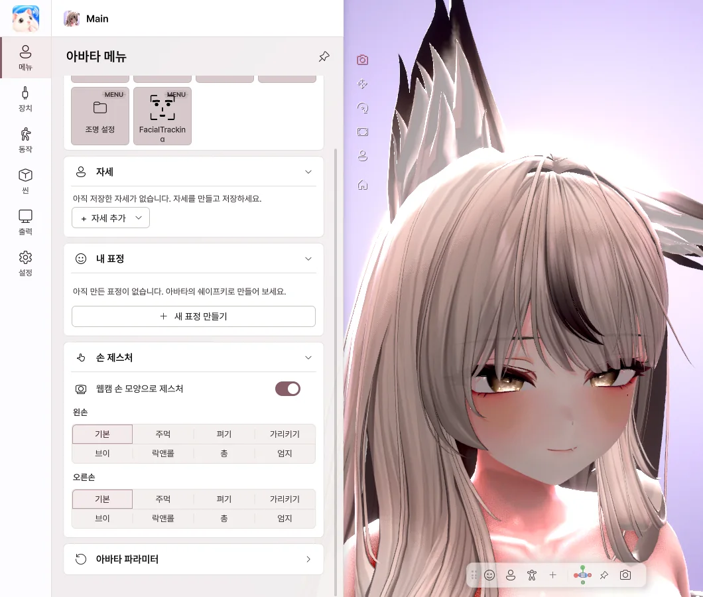

5. 아바타 메뉴
VRChat에서 쓰던 아바타의 Expression 메뉴를 그대로 씁니다. 옷과 헤어 토글, 표정 버튼, Radial, Puppet이 VRChat과 똑같이 동작합니다.
Expression 메뉴

- Toggle — 누를 때마다 켜고 끕니다.
- Button — 누르고 있는 동안 켜집니다.
- Sub Menu — 하위 메뉴를 엽니다. 뒤로로 돌아갑니다.
- Radial · Puppet — 슬라이더나 패드로 값을 정합니다.
항목 우클릭

- 퀵 액션에 추가 — 아래 툴바에 버튼으로 둡니다.
- 단축키 지정… — 게임 중에도 키 하나로 켤 수 있습니다.
- 즐겨찾기 — 메뉴 맨 위에서 바로 씁니다.
손 제스처

- 왼손 · 오른손 제스처를 골라 아바타의 제스처 표정을 냅니다.
- 웹캠 손 모양으로 제스처를 켜면 내 손 모양이 그대로 제스처가 됩니다.
기본값으로 되돌리기
아바타 파라미터 › 기본값으로 되돌리기를 누르면 메뉴 값이 아바타 기본값으로 돌아갑니다. 옷 상태처럼 저장되는 값은 다음 실행에도 이어집니다.
퀵 액션
자주 쓰는 동작을 버튼이나 키로 만들어 둡니다. 메뉴 항목, 제스처, 카메라 뷰, 조명 프리셋 등을 넣을 수 있고, 버튼을 우클릭하면 이름과 위치를 바꿀 수 있습니다.
계층 구조 · 메시 · 쉐이프키
아바타의 오브젝트를 Unity처럼 트리로 보고 바로 고칩니다.
- 계층 구조 — 아바타의 오브젝트를 트리로 봅니다. 체크로 켜고 끄며, 눈 아이콘은 오브젝트를 켠 채 화면에서만 숨깁니다.
- 메시 — 모든 메시를 한 목록으로 봅니다. 검색으로 빠르게 찾을 수 있습니다.
- 메시를 누르면 옆 패널에서 쉐이프키를 하나씩 조절합니다. 직접 정한 값은 얼굴 트래킹과 아바타 애니메이션보다 우선합니다.
- 맨 위 모두 초기화로 모든 메시를 아바타 원래 상태로 되돌리고, 모두 접기로 트리를 닫습니다.
초기화
| 초기화 | 모두 초기화 | |
|---|---|---|
| 하는 일 | 트래킹, 손 자세, PhysBone을 처음 상태로 | 위의 것과 함께 옷 · 위치 · 카메라까지 처음 상태로 |
| 실행 | 위쪽 ⟲ | ⟲ 우클릭, 또는 설정 › 일반 |